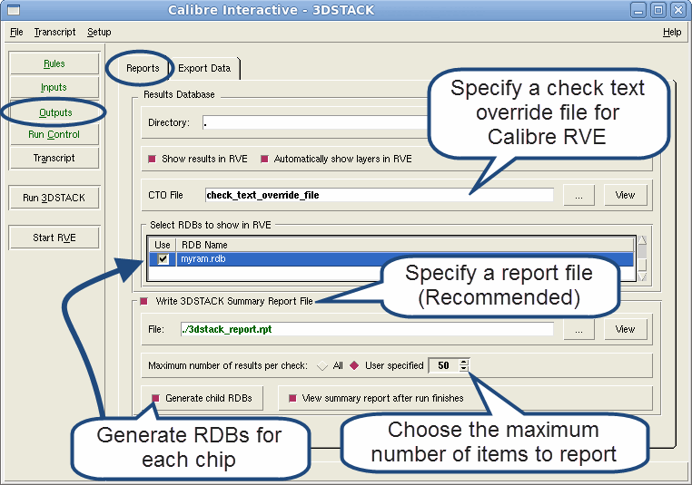

Use Calibre Interactive
to specify the path and location of the results database and Calibre 3DSTACK
report file. Report files are very useful for debugging runs. This
procedure is optional.
Procedure
- Click on the Outputs button
to specify optional reporting and output files.
Figure 1. Specify Outputs in
Calibre Interactive
- Enable
“Show results in RVE checkbox” under the Reports to display results
in Calibre RVE following a Calibre 3DSTACK run.
This checkbox is disabled
if the Create Only operation is enabled under .
- Specify a CTO file that controls
how Calibre RVE displays rule check results. See “Check Text Override Comments for Calibre 3DSTACK” for details on this file.
- Enable
the “Generate child RDBs” checkbox and use the table to select additional
RDBs that you want to generate.
These databases are
produced by Calibre 3DSTACK and are opened along with 3dstack.rdb when
the run completes.
- Enable
the “Write 3DSTACK Summary Report File” checkbox and specify a pathname for
the report.
You can limit
the number of results per check in the report by enabling the User Specified
checkbox and entering a positive integer value.
The report
file contains important information about the design and verification
results. Enabling this option is highly recommended.
Results
The results database file and directory
have been specified. These files contain verification results used
by Calibre RVE. Additionally, a report file and reporting options
have been specified.